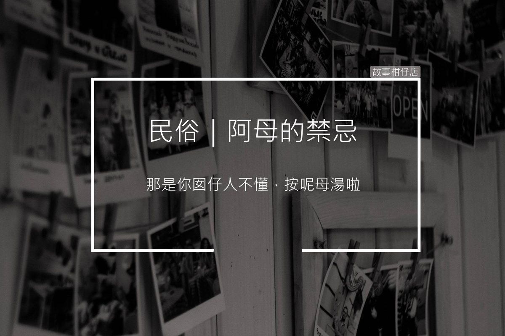

阿母的禁忌
2018-04-20

禁忌或忌諱是指在一些特定的文化或是在生活起居中被禁止的行為和思想，傳統的文化觀念相信，違反禁忌的行為可能會為社會帶來破壞和騷亂，甚至可能造成人命的傷亡。
〈阿母的禁忌〉
「那是你囡仔人不懂，邊間陰氣重，不能住啦！」月霞的大嗓門，在飯店長廊上陣陣迴盪。
兒子扁扁嘴，沒有回話。女兒卻悶哼了一聲，從口袋撈出耳機塞上。老伴則一副狀況外的模樣，拖著行李，悠悠閒閒走在後頭。
月霞雙手將肩包緊緊地箍在懷中，踩著小碎步追上，衝著兒子的背影叨念。他們怎麼知道，方才飯店櫃臺前，自己可是費了好大一番勁，才成功拜託櫃台小姐幫忙換了房間哪。
走到房門口，女兒從哥哥手中抽走房卡，搶著要開門，卻被月霞一個箭步擋下。
「拍謝，打擾。」月霞慎重地朝門板敲了三下，才讓女兒刷開房門。
「妳齁！要記住，出外住吼，就要先… 」月霞正打算對女兒機會教育一番，卻被兒子的嚷嚷聲打斷。
「媽！都妳啦，我託同事好不容易才訂到的景觀大套房欸......」
月霞不理會兒子的抱怨，一把攔住要進廁所補妝的女兒。
「袂賽袂賽！外面住的馬桶要先沖一下仔水，去去晦氣。」
才按下沖水鍵，一扭頭，瞧見屋內擺設，又高八度地喊了起來。
「哀唷！這鏡子怎麼對著床！按呢不好、不好！」月霞左顧右盼，拖起床單要遮鏡子，一陣手忙腳亂，伸長了脖子喊老伴：「孩子的爸，你緊來幫我！」
「爸～我們來拍照，不要管媽了啦，反正她也不愛拍。」女兒拿出自拍棒，一手挽著哥哥，邊朝老爸招呼。
「母湯母湯！妳跟妳哥拍就好！三個人照會短壽！」月霞一聽連連搖手，剛繫好的床單又從鏡面滑落。
老伴笑著從沙發起身，托起月霞的手，輕輕在她手背拍了拍：
「妳嘛作伙來照相，這樣不就好四連連啦。」
翻翻農民曆、挑個好日子，
一起來故事柑仔店
聽聽民俗的故事。